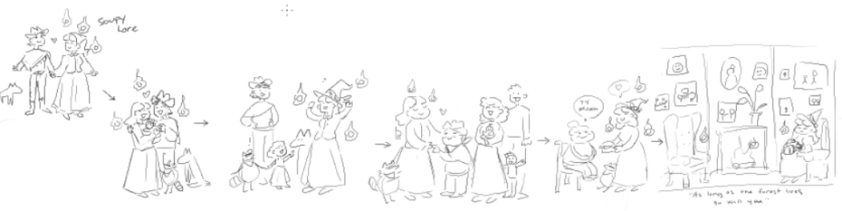
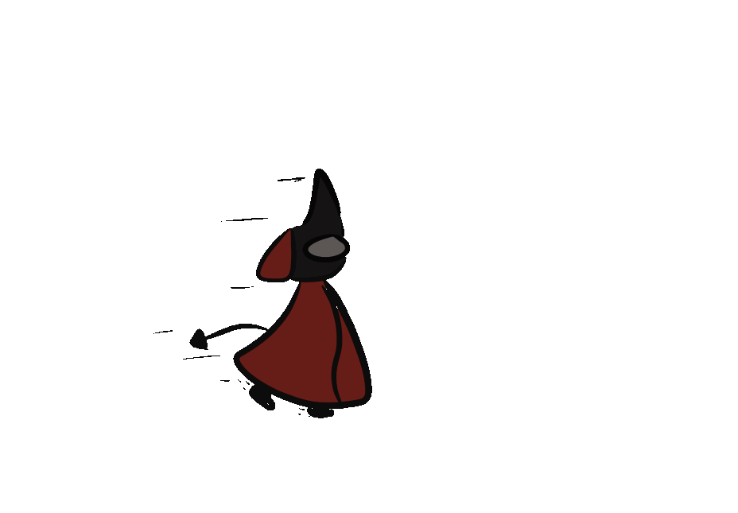

Information
Once a standard little home, the cottage has been transformed over the centuries
to house all manners of individuals. It’s a place where all creatures from any
plane or of any kin can come for sanctuary. It's a place of no violence and plentiful
supplies and sustenance. The only fee? Your willingness to coexist and rest alongside any
creature regardless of origin. The cottage is a place that promotes unity and safety.
If you wish to visit our sanctuary, please fill out the questionnaire in the Customize Your Room tab,
and once you are ready, open any door nearest to you and walk through. We can’t wait to have you with us!

A breif tale
The Cottage was built in 1860 by Soupy and her husband with the help of several of their friends.
During the spring of 1880 the cottage was destroyed by a servant of the Nowhere king
After the attack, Soupy restored the interior of the Cottage to its former glory within a pocket dimension.
From the 1880s onward, the Cottage door stood as a symbol of refuge within the Forest.
Many residents came and went over the course of 144 years.
Soupy made a massive effort to ensure the safety of the reconstruction and of the residents
therein by designing protective sigils infused with powerful magic to prevent conflict before it could take shape.
As a result of these sigils and their placement, the Cottage was not accessible to those who sought to destroy the Cottage or harm its residents.
If the door was opened with malice at heart, it would open to the forest beyond.
Further guide to our world

Soupy and her familiar Bandit, and her aprentice, Yui, and her familiar Poe

While the cottage is mostly incorporeal, it partially exists south of Mirror Lake betwen the Gloamings

Sample room of one of our demon guests

Soupy's mentor, Baba Yaga, who helped her contruct the Cottage ( ft. her familiar Cosmo )

The Nowhere king; if you are associated in any way with him, the cottage will reject you for our and our guest's saftey
